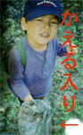
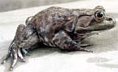

猫に襲われたカエルを救出！ 【福岡発／謎の主婦様】福岡城を散歩していたときのことです。猫が、何かに向かって襲い掛かっていました。みると、ばかでかいカエルです。気になったけど、あまりにもでかいカエルなので、関わるのもなんだかなーって、知らぬ顔で通り過ぎようとしたところ！ わが子が『カエルさんが猫に襲われているよ！助けないと！』と、袖をひっぱったのです。 あまりにもでかいかえるなので、手でつかむのもなああって、ためらっていると、なおも『はやく助けないと死んでしまうよ』と、叫ぶわが子の、カエルを愛する心に打たれて、近くのビニール袋を拾い、襲い掛かる猫を追い払った後に、ビニールでカエルをつかみあげて、池に離してあげました。 かえるは、ぐったりしていましたが、やがて、池のなかに泳いでゆきました。 翌日、そこを通りかかると、カエルを襲っていた猫がいたので、『あんた。カエルを襲ったらいけんよ！』と厳しく注意しときました。 写真は、ビニール入りのカエル様を手にして、満面の笑みを浮かべるわが子です。 少年にカエル烈士の称号を付与！ 【全国かえる奉賛会】ためらう母親を叱咤激励して、偉大なカエルさまを、救出した少年に、『カエル烈士』の称号を付与することとする。幼少のころに、カエルを救ったこどもは、十二歳になったときに、巨大なガマガエルが迎えに現れて、それにまたがって、全国を統一し、天下を取る！という言い伝えがある。 まさに、カエル神童生活が約束されたようなものであるううう。きっと美人なカエルの嫁さんも現れて生涯幸福保証され、母親は、『カエル烈士の母』として、末永く語り継がれることであろう。 現場となった福岡城趾には、将来『カエル烈士様、ウシガエル御救出の場所』として石碑ができるであろうぞおおおおおおおおおおおおお。
写真は、少年が救出したのと同型のウシガエル様。
カエルのイラストコンテスト！【東京発けぐり同志記者】株式会社バンダイが 『カエルを題材とした未発表のオリジナル作品』※カエルの実在・架空は問いません。を募集しています。作品サイズ：応募はハガキで（はがきサイズの用紙も可）出品料：無料 画材：自由。カラー、モノクロとも可。ただし、立体・半立体・写真・コピーは不可。 応募方法：ハガキ（または同サイズの用紙）に、作者本人の郵便番号、住所、氏名、フリガナ、生年月日、電話番号（自宅・携帯）、Ｅメールアドレス、勤務先（学校名）を明記。応募は１人１点。 応募資格：中学生以上。 締め切りは１１／２９（金）必着だそうだあ。 113-0021 東京都文京区本駒込3-20-3 講談社フェーマススクールズ「カエルのイラスト」Ｈ係にどんどん出しましょう！ 詳しくは、ホームページ http://www.kfsnet.co.jp/contestを見ようぜえええ。
大賞：１名 賞状と賞金３０万円。優秀賞：５名 賞金１万円。佳作：３０名 賞品。入選：１００名 記念品
|
メールマガジン登録
メールマガジン解除
Powered by


かえる古新聞過去に取り上げた記事を見出し付きで一覧したい人は、ここをクリック◆創刊号を見る◆先週号を見る◆話題の号を見る◆かえる新聞の昔を読む
|
私も入っています。。全国かえる奉賛会
大王様に会うには、このバナーをクリック。ずっと奥に写真館があるぞ。全国かえる奉賛会に入会するには、自分のホームページのどこかに、下の部分を追加するとバナーがリンク付きで表示されるぞ。どんどん入会しましょー |


|